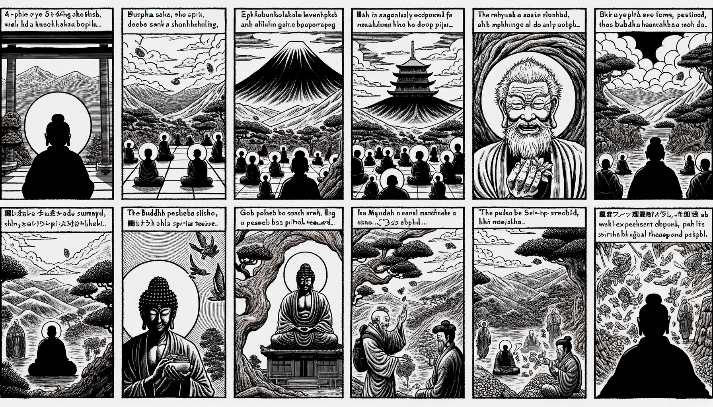

七十五巻 巻一覧
正法眼藏第51 面授
本ページは tools/gen_web_volumes.py が doc/正法眼蔵.txt から冒頭を抜粋して生成しています。図・詳細解説は今後の手編集で拡張できます。
出典（原文）: https://shomonji.or.jp/zazen/doc/genzou.html
（ローカル生成の全文: 全文ページ）
この巻の位置づけ（学習メモ）
道元『正法眼蔵』七十五巻の第51篇「面授」です。禅籍・経典への引用や語の行間が重なりやすいので、一度ですべてを要約に還元しない読み方を推奨します。問答 Bot では巻スコープにこの題名を含めると応答が安定しやすいことがあります。
語彙の足場
- 題名語：巻題「面授」は、道元が本章で特に扱う論点の看板です。辞書義だけに固定せず、本文中の用例で意味を確かめます。
- 引用と典故：公案・経文の引用は、一字一句の照応（何に答えているか）を押さえると全体が見えやすくなります。
- 学び方：冒頭だけでも音読し、分からない箇所は印を付けて後から問うとよいです。
本文（冒頭・自動抜粋）
出典はリポジトリ内 doc/正法眼蔵.txt です。原文の参照元: https://shomonji.or.jp/zazen/doc/genzou.html
爾時釋迦牟尼佛、西天竺國靈山會上、百萬衆中、拈優曇花瞬目。於時摩訶迦葉尊者、破顔微笑。（爾の時に釋迦牟尼佛、西天竺國靈山會上、百萬衆の中にして、優曇花を拈じて瞬目したまふ。時に摩訶迦葉尊者、破顔微笑せり）。
釋迦牟尼佛言、吾有正法眼藏涅槃妙心、附囑摩訶迦葉（釋迦牟尼佛言はく、吾有の正法眼藏涅槃妙心、摩訶迦葉に附囑す）。
これすなはち、佛佛祖祖、面授正法眼藏の道理なり。七佛の正傳して迦葉尊者にいたる、迦葉尊者より二十八授して菩提達磨尊者にいたる、菩提達磨尊者、みづから震旦國に降儀して、正宗太祖普覺大師慧可尊者に面授す。五傳して曹谿山大鑑慧能大師にいたる。一十七授して先師大宋國慶元府太白名山天童古佛にいたる。
大宋寶慶元年乙酉五月一日、道元はじめて先師天童古佛を妙高臺に燒香禮拜す。先師古佛はじめて道元をみる。そのとき道元に指授面授するにいはく、
佛佛祖祖、面授の法門現成せり。これすなはち靈山の拈花なり、嵩山の得髓なり。黄梅の傳衣なり、洞山の面授なり。これは佛祖の眼藏面授なり。吾屋裡のみあり、餘人は夢也未見聞在なり。
この面授の道理は、釋迦牟尼佛まのあたり迦葉佛の會下にして面授し護持しきたれるがゆゑに、佛祖面なり。佛面より面授せざれば諸佛にあらざるなり。釋迦牟尼佛まのあたり迦葉尊者をみること親附なり。阿難羅睺羅といへども迦葉の親附におよばず、諸大菩薩といへども迦葉の親附におよばず、迦葉尊者の座に坐することえず。世尊と迦葉と、同座し同衣しきたるを、一代の佛儀とせり。迦葉尊者したしく世尊の面授を面授せり。心授せり、身授せり、眼授せり。釋迦牟尼佛を供養恭敬、禮拜奉覲したてまつれり。その粉骨碎身、いく千萬變といふことをしらず。自己の面目は面目にあらず、如來の面目を面授せり。
釋迦牟尼佛まさしく迦葉尊者をみまします。迦葉尊者まのあたり阿難尊者をみる。阿難尊者まのあたり迦葉尊者の佛面を禮拜す。これ面授なり。阿難尊者この面授を住持して、商那和修を接して面授す。商那和修尊者まさしく阿難尊者を奉覲するに、唯面與面、面授し面受す。かくのごとく代代嫡嫡の祖師、ともに弟子は師にみえ、師は弟子をみるによりて面授しきたれり。一祖一師一弟としても、あひ面授せざるは佛佛祖祖にあらず。たとへば、水を朝宗せしめて宗派を長ぜしめ、燈を續して光明つねならしむるに、億千萬法するにも、本枝一如なるなり。また啐啄の迅機なるなり。
しかあればすなはち、まのあたり釋迦牟尼佛をまぼりたてまつりて一期の日夜をつめり。佛面に照臨せられたてまつりて一代の日夜をつめり。これいく無量を往來せりとしらず。しづかにおもひやりて隨喜すべきなり。
釋迦牟尼佛の佛面を禮拜したてまつり、釋迦牟尼佛の佛眼をわがまなこにうつしたてまつり、わがまなこを佛眼にうつしたてまつりし佛眼睛なり、佛面目なり。これをあひつたへていまにいたるまで、一世も間斷せず面授しきたれるはこの面授なり。而今の數十代の嫡嫡は、面面なる佛面なり。本初の佛面に面受なり。この正傳面授を禮拜する、まさしく七佛釋迦牟尼佛を禮拜したてまつるなり。迦葉尊者等の二十八佛祖を禮拜供養したてまつるなり。
佛祖の面目眼睛かくのごとし。この佛祖にまみゆるは、釋迦牟尼佛等の七佛にみえたてまつるなり。佛祖したしく自己を面授する正當恁麼時なり。面授佛の面授佛に面授するなり。葛藤をもて葛藤に面授してさらに斷絶せず。眼を開して眼に眼授し、眼受す。面をあらはして面に面授し、面受す。面授は面處の受授なり。心を拈じて心に心授し、心受す。身を現じて身を身授するなり。他方他國もこれを本祖とせり。震旦國以東、ただこの佛正傳の屋裏のみ面授面受あり。あらたに如來をみたてまつる正眼をあひつたへきたれり。
釋迦牟尼佛面を禮拜するとき、五十一世ならびに七佛祖宗、ならべるにあらず、つらなるにあらざれども、倶時の面授あり。一世も師をみざれば弟子にあらず、弟子をみざれば師にあらず。さだまりてあひみ、あひみえて、面授しきたれり。嗣法しきたれるは、祖宗の面授處道現成なり。このゆゑに、如來の面光を直拈しきたれるなり。
しかあればすなはち、千年萬年、百劫億劫といへども、この面授これ釋迦牟尼佛の面現成授なり。この佛祖現成せるには、世尊、迦葉、五十一世、七代祖宗の影現成なり、光現成なり。身現成なり、心現成なり。尖脚來なり、尖鼻來なり。一言いまだ領覽せず、半句いまだ不會せずといふとも、師すでに裏頭より弟子をみ、弟子すでに頂𩕳より師を拜しきたれるは、正傳の面授なり。
かくのごとくの面授を尊重すべきなり。わづかに心跡を心田にあらはせるがごとくならん、かならずしも太尊貴生なるべからず。換面に面授し、廻頭に面授あらんは、面皮厚三寸なるべし、面皮薄一丈なるべし。すなはちの面皮、それ諸佛大圓鏡なるべし。大圓鑑を面皮とせるがゆゑに、内外無瑕翳なり。大圓鑑の大圓鑑を面授しきたれるなり。
まのあたり釋迦牟尼佛をみたてまつる正法を正傳しきたれるは、釋迦牟尼佛よりも親曾なり。眼尖より前後三三の釋迦牟尼佛を見出現せしむるなり。かるがゆゑに、釋迦牟尼佛をおもくしたてまつり、釋迦牟尼佛を戀慕したてまつらんは、この面授正傳をおもくし尊崇し、難値難遇の敬重禮拜すべし。すなはち如來を禮拜したてまつるなり。如來に面授せられたてまつるなり。あらたに面授如來の正傳參學の宛然なるを拜見するは、自己なりとおもひきたりつる自己なりとも、他己なりとも、愛惜すべきなり、護持すべきなり。
屋裏に正傳しいはく、八塔を禮拜するものは罪障解脱し、道果感得す。これ釋迦牟尼佛の道現成處を生處に建立し、轉法輪處に建立し、成道處に建立し、涅槃處に建立し、曲女城邊にのこり、菴羅衞林にのこれる、大地を成じ、大空を成ぜり。乃至聲香味觸法色處等に塔成せるを禮拜するによりて、道果現感す。この八塔を禮拜するを、西天竺國のあまねき勤修として、在家出家、天衆人衆、きほうて禮拜供養するなり。これすなはち一卷の經典なり。佛經はかくのごとし。いはんやまた、三十七品の法を修行して、道果を箇箇生生に成就するは、釋迦牟尼佛の亙古亙今の修行修治の蹤跡を、處處の古路に流布せしめて、古今に歴然せるがゆゑに成道す。
しるべし、かの八塔の層層なる、霜華いくばくかあらたまる。風雨しばしばをかさんとすれど、空にあとせり、色にあとせるその功徳を、いまの人にをしまざること減少せず。かの根力覺道、いま修行せんとするに、煩惱あり、惑障ありといへども、修證するに、そのちからなほいまあらたなり。
釋迦牟尼佛の功徳、それかくのごとし。いはんやいまの面授は、かれらに比準すべからず。かの三十七品菩提分法は、かの佛面佛心、佛身佛道、佛光佛舌等を根元とせり。かの八塔の功徳聚、また佛面等を本基とせり。いま學佛法の漢として、透脱の活路に行履せんに、閑靜の晝夜、つらつら思量功夫すべし、歡喜隨喜すべきなり。
いはゆるわがくには他國よりもすぐれ、わが道はひとり無上なり。他方にはわれらがごとくならざるともがらおほかり。わがくに、わが道の無上獨尊なるといふは、靈山の衆會、あまねく十方に化導すといへども、少林の正嫡まさしく震旦の教主なり。曹谿の兒孫、いまに面授せり。このとき、これ佛法あらたに入泥入水の好時節なり。このとき證果せずは、いづれのときか證果せん。このとき斷惑せずは、いづれのときか斷惑せん。このとき作佛ならざらんは、いづれのときか作佛ならん。このとき坐佛ならざらんは、いづれのときか行佛ならん。審細の功夫なるべし。
釋迦牟尼佛かたじけなく迦葉尊者に附囑面授するにいはく、吾有正法眼藏、附囑摩訶迦葉とあり。
嵩山會上には、菩提達磨尊者まさしく二祖にしめしていはく、汝得吾髓。
はかりしりぬ、正法眼藏を面授し、汝得吾髓の面授なるは、ただこの面授のみなり。この正當恁麼時、なんぢがひごろの骨髓を透脱するとき、佛祖面授あり。大悟を面授し、心印を面授するも、一隅の特地なり。傳盡にあらずといへども、いまだ欠悟の道理を參究せず。
おほよそ佛祖大道は、唯面授面受、受面授面のみなり。さらに剩法あらず、虧闕あらず。この面授のあふにあへる自己の面目をも、隨喜歡喜、信受奉行すべきなり。
道元、大宋寶慶元年乙酉五月一日、はじめて先師天童古佛を禮拜面授す。やや堂奥を聽許せらる。わづかに身心を脱落するに、面授を保任することありて、日本國に本來せり。
正法眼藏第五十一
爾時寛元元年癸卯十月二十日在越宇吉田縣吉峰精舍示衆
佛道の面授かくのごとくなる道理をかつて見聞せず、參學なきともがらあるなかに、大宋國仁宗皇帝の御宇、景祐年中に薦福寺の承古禪師といふものあり。
上堂云、雲門匡眞大師、如今現在、諸人還見麼。若也見得、便是山僧同參。見麼見麼。此事直須諦當始得、不可自謾（雲門匡眞大師、如今現在せり、諸人還た見麼。若し也た見得ならば便ち是れ山僧と同參ならん。見麼、見麼。此の事直に須らく諦當にして始得ならん、自ら謾ずべからず）。
且如往古黄檗、聞百丈和尚擧馬大師下喝因緣、他因大省（且く往古の黄檗の如き、百丈和尚の馬大師下喝の因緣を擧するを聞いて、他因みに大省せり）。
百丈問、子向後莫嗣大師否（子向後大師に嗣すること莫しや否や）。
黄檗云、某雖識大師、要且不見大師。若承嗣大師、恐喪我兒孫（某大師を識ると雖も、要且不見大師。若し大師に承嗣せば、恐らくは我が兒孫を喪せん）。
大衆、當時馬大師遷化、未得五年。黄檗自言不見、當知、黄檗見所不圓。要且祗具一隻眼。山僧卽不然、識得雲門大師、亦見得雲門大師。方可雲門承嗣大師。祗如雲門、入滅已得一百餘年。如今作麼生説箇親見底道理。會麼。通人達士、方可證明。眇劣之徒、心生疑謗、見得不在言之、未見者、如今看取不。請久立珍重（大衆、當時馬大師遷化して未得五年なり。黄檗自ら不見と言ふ。當に知るべし、黄檗の見所不圓なり。要且祗一隻眼を具せり。山僧は卽ち然らず。雲門大師を識得し、亦雲門大師を見得せり。方に雲門大師を承嗣すべし。祗雲門の如きは、入滅して已得一百餘年なり。如今作麼生か箇の親見底の道理を説かん。會麼。通人達士にして方に證明すべし。眇劣の徒らは心に疑謗を生ず。見得は之を言ふこと在らず。未見の者、如今看取すや不や。請すらくは久立珍重）。
いまなんぢ雲門大師をしり、雲門大師をみることをたとひゆるすとも、雲門大師まのあたりなんぢをみるやいまだしや。雲門大師なんぢをみずは、なんぢ承嗣雲門大師不得ならん。雲門大師いまだなんぢをゆるさざるがゆゑに、なんぢもまた雲門大師われをみるといはず。しりぬ、なんぢ雲門大師といまだ相見せざりといふことを。
七佛諸佛の過去現在未來に、いづれの佛祖か師資相見せざるに嗣法せる。なんぢ黄檗を見處不圓といふことなかれ。なんぢいかでか黄檗の行履をはからん。黄檗の言句をはからん。黄檗は古佛なり、嗣法に究參なり。なんぢは嗣法の道理かつて夢也未見聞參學在なり。黄檗は師に嗣法せり、祖を保任せり。黄檗は師にまみえ、師をみる。なんぢはすべて師をみず、祖をしらず。自己をしらず、自己をみず。なんぢをみる師なし、なんぢ師眼いまだ參開せず。眞箇なんぢ見處不圓なり、嗣法未圓なり。
なんぢしるやいなや。雲門大師はこれ黄檗の法孫なることを。なんぢいかでか百丈黄檗の道處を測量せん。雲門大師の道處、なんぢなほ測量すべからず。百丈黄檗の道處は、參學のちからあるもの、これを拈擧するなり。直指の落處あるもの、測量すべし。なんぢは參學なし、落處なし。しるべからず、はかるべからざるなり。
馬大師遷化未得五年なるに、馬大師に嗣法せずといふ、まことにわらふにもたらず。たとひ嗣法すべくは、無量劫ののちなりとも嗣法すべし。嗣法すべからざらんは、半日なりとも須臾なりとも、嗣法すべからず。なんぢすべて佛道の日面月面をみざる、暗者愚蒙なり。
雲門大師入滅已得一百餘年なれども雲門に承嗣すといふ、なんぢにゆゆしきちからありて雲門に承嗣するか。三歳の孩兒よりはかなし。一千年ののち雲門に嗣法せんものは、なんぢに十倍せるちからあらん。われいまなんぢをすくふ、いばらく話頭を參學すべし。
百丈の道取する、子向後莫承嗣大師否の道取は、馬大師に嗣法せよといふにはあらぬなり。しばらくなんぢ師子奮迅話を參學すべし、烏龜倒上樹話を參學して、進歩退歩の活路を參學すべし。嗣法に恁麼の參學力あるなり。黄檗のいふ恐喪我兒孫のことば、すべてなんぢはかるべからず。我の道取および兒孫の人、これたれなりとかしれる。審細に參學すべし。かくれずあらはして道現成せり。
しかあるを、佛國禪師惟白といふ、佛祖の嗣法にくらきによりて、承古を雲門の法嗣に排列せり、あやまりなるべし。晩進しらずして、承古も參學あらんとおもふことなかれ。
なんぢがごとく文字によりて嗣法すべくは、經書をみて發明するものはみな釋迦牟尼佛に嗣法するか、さらにしかあらざるなり。經書によれる發明、かならず正師の印可をもとむるなり。
なんぢ承古がいふごとくには、なんぢ雲門の語録なほいまだみざるなり。雲門の語をみしともがらのみ雲門には嗣法せり。なんぢ自己眼をもていまだ雲門をみず、自己眼をもて自己をみず、雲門眼をもて雲門をみず、雲門眼をもて自己をみず。かくのごとくの未參究おほし。さらに草鞋を買來買去して、正師をもとめて嗣法すべし。なんぢ雲門大師に嗣すといふことなかれ。もしかくのごとくいはば、すなはち外道の流類なるべし。たとひ百丈なりとも、なんぢがいふがごとくいはば、おほきなるあやまりなるべし。
図解（4コマ・AI生成）
教義の根拠は本文・出典に従い、漫画は比喩の補助に留めてください。

深掘り（読解のコツ）
- 道元文は定義の羅列に見えても、多くの場合誤解への遮断と正伝の姿勢が背骨になっています。
- 「当体」「現成」「即」などの語が出たら、その巻独自の差別相にどう接続しているかをメモしておくとよいです。